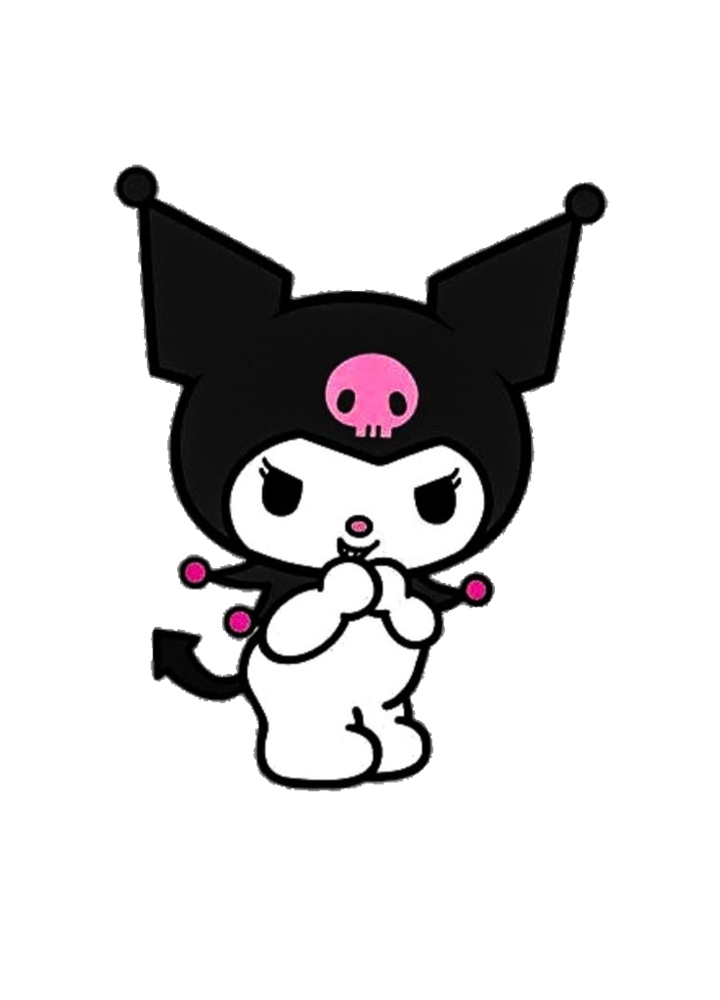
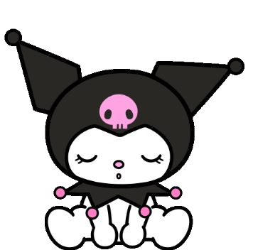

A note from the heart
Dear Hailey,
I'm sending you this because I wanted you to know that I am so grateful to have met such an amazing person like you, and you mean the world to me.
I really wish i will never lose you. Please don't be harsh to yourself because you're more than enough.